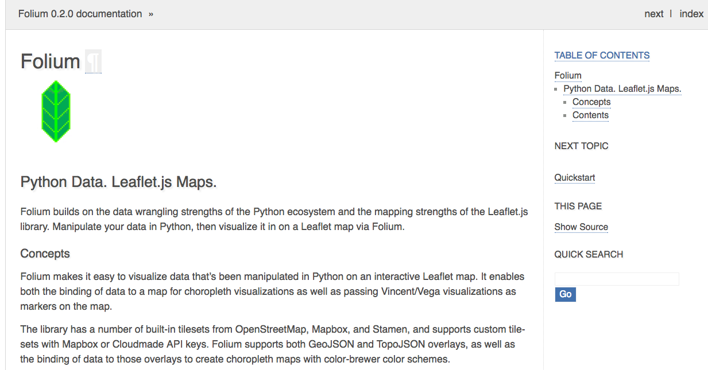

CH 10 - Geographic Information Systems (GIS)
Quantum GIS (QGIS)
To install
You can install QGIS from scratch; however, it is a massive pain to manage, database connections will be flakey and scripting languages may through errors. So, like installing Python with Conda, I think it is totally worth using KyngChaos’ bundle to get started.
http://www.kyngchaos.com/software/qgis
Look for the “download” section of the page
To use
Geospatial Python
You don’t need a full geographic system or user interface to do GIS. In fact as you work in this space, you may find Python is perfectly adequate for most analyses.
Analysis
Visualization
You can make awesome maps with Jupyter and Folium. These are ideal for adding to articles or blog posts. They can handle and display geographic dataformats seamlessly and save time.
